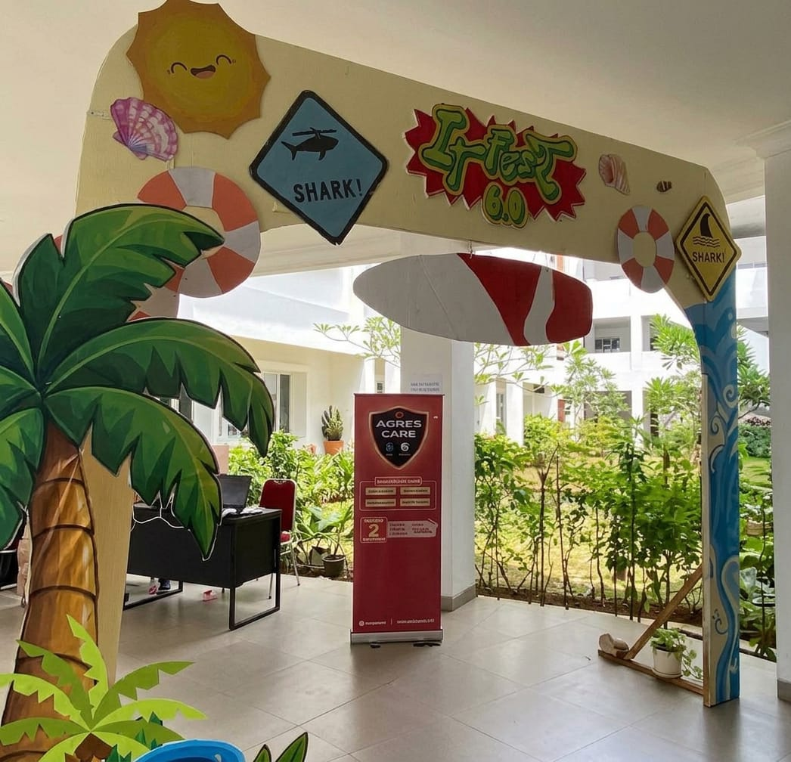
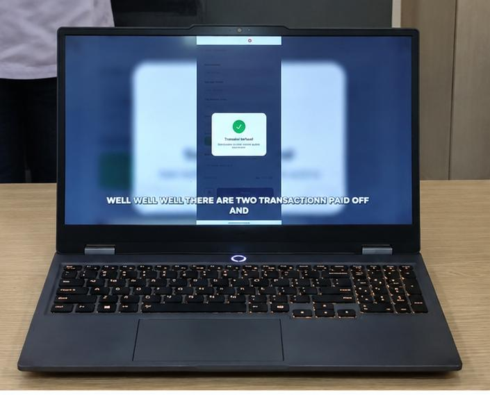
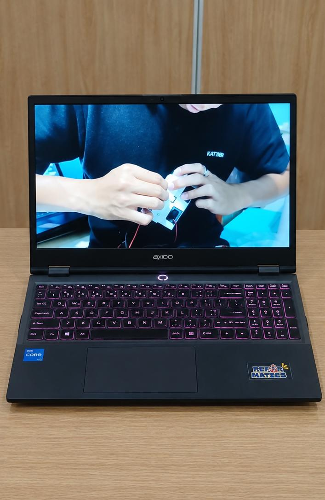

IT
Fest
EXPO
Kami membuat proyek acara IT fest yang mengenai Expo untuk menampilkan inovasi terbaru dalam dunia teknologi dan memperkenalkan invatif yang dibuat oleh para mahasiswa
Informatics Engineering project Exhibition
01 — 05 01 Jadi Petani
01 Jadi Petani
Jadipetani adalah platform digital berbasis website yang mendukung regenerasi petani Indonesia
dengan menghubungkan petani senior dan generasi muda. Fitur utamanya meliputi program magang,
job connector, kurikulum berbasis AI, dan komunitas. Model bisnisnya terdiri dari paket langganan
(50%), komisi layanan(30%), serta lisensi sekolah dan klinik (20%). Platform ini menggunakan React,
Tailwind CSS, Express.js, Prisma ORM, Postgresql, Gemini AI, dan midtrans untuk mendukung pertanian
yang lebih maju.
 02 Teliti
02 Teliti
Teliti adalah platform web berbasis AI untuk deteksi bias (7 kategori) dan konsistensi argumen
dokumen akademik melalui fitur laporan lengkap, Integrity Score (0-100), dan document viewer dengan
highlight. Model bisnisnya menyediakan akses gratis penuh untuk mahasiswa guna memberikan keunggulan
kompetitif dibanding platform lain. Teknologi utamanya didukung oleh Gemini AI untuk menjalankan dua analisis
paralel secara instan dan akurat.

03 Kulakan
Kulakan adalah aplikasi manajemen bisnis perikanan yang memudahkan pengguna mengelola transaksi,stok,
dan penjualan hasil laut dalam satu platform. Fitur utamanya meliputi dashboard interaktif, pengelolaan
stok dan inventaris, pencatatan transaksi, peta lokasi nelayan dan pasar, serta laporan dan analisis berbasis AI.
Kulakukan membantu pelaku usaha perikanan memantau keuagan, mengelola persediaan, dan meningkatkan
efisiensi bisnis secara digital.

04 Titip
Titip adalah sistem cold staroge pintar berbasis AI dan IOT yang membantu menjaga kesegaran produk
pangan di pasar tradisional. Sistem ini dilengkapi sensor suhu kelembapan, dan gas untuk memantau
kondisi penyimpanan secara real-time, serta AI untuk memprediksi masa layak jual produk. Fitur utamanya
meliputi pemantauan melalui dashbord PWA, penyewaan loker pendingin, akses otomatis menggukana QR code,
dan pembayaran digital terintegrasi QRIS.
 05 Paramaflood Monitor
05 Paramaflood Monitor
Paramaflood monitor adalah sistem pemantauan cuaca dan peringatan
dini banjir berbasis IOT dan AI, Sistem ini menggunakan sensor untuk
memantau kondisi lingkungan secara real-time, memprediksi potensi
banjir dengan teknologi LSTM, dan memberikan notifikasi dan rekomendasi keselamatan melalui aplikasi mobile flutter.
Bazaar IT Fest EXPO
01 — 03

Realita Di balik
Pembuatan Studi Kasus Website EXPO
Lama mencari template buat tugas web karna kebanyakan template yang ada tidak sesuai dengan yang mau digunakan.
Pusing saat ukuran poto nya tidak sama semua dan nambahin efek pop up ke poto ketika diklik.
Kurang nya akan pengalaman dalam pengembangan website dan buntu nya dalam penambahan akan ide" dalam pengembangan website.
Kita jadi dapat pengalaman membuat website walaupun rumit codingannya tapi saat melihat websitw berhasil berjalan dengan baik
Pameran Rancangan Aplikasi Website & Iot
Mengenal dan menghadirkan inovasi terbaru dalam dunia website dan Iot yang dikembangkan oleh para mahasiswa.
barudak@gmail.well